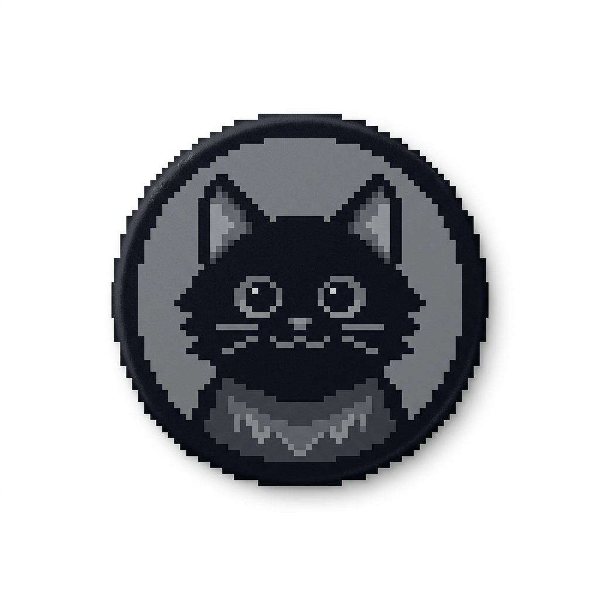

Interactive Computer Graphics Enthusiast
Welcome to my minimalist portfolio showcasing a software-based rasterizer. Explore the interactive demo, learn about my technical skills, and access the original source file for hands-on experience.
This interactive demo showcases a software-based rasterizer that allows users to draw lines on a canvas and manipulate a 24-bit Cat sprite. The project demonstrates fundamental computer graphics concepts such as pixel manipulation, line drawing algorithms, and sprite transformations including translation, rotation, and scaling.
Source Reference: 800_raster.html
Click the button below to view the raw project file and explore the full computer graphics logic.
Open 800_raster.html